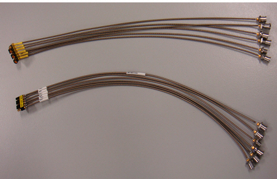
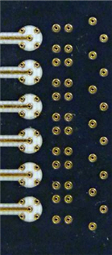
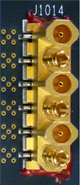
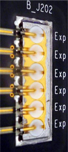
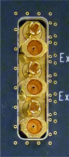

Mini-coax cables and connectors
The Port Scale RF mini-coax cables are recommended for higher SmarTest Work Center applications or devices with a high number of RF ports per site.
By design, the PSRF cables and connectors support the cable routing of up to four Port Scale FE24 cards and up to 96 RF ports.
From the provided parts you can assemble and replace cables according to your needs. The graphic shows an assembly of 6 channels.

Diameter |
1.42 mm (traditionally 1.8 mm) |
Dielectric loss |
dK=1.25 (traditionally dK=1.52) |
Bend radius |
6.35 mm (traditionally 10.2 mm) |
Disengagement force |
~ 24 N |
Engagement force |
< 12.5 N |
Number of mating cycles |
> 500 |
Mounting of the Multiport mini-coax connectors
You have two options when planning the mounting of the connectors. Both have their advantages.
Surface Mounting
With surface mounting (also called standard mounting), the signal is routed on the same side of the board as the cabling. An additional via connection is required from the tester side to the DUT side connection.
Through Board Mounting
The through board mounting (also called reverse mounting) requires a cut-out in the board, to reach the cabling on the opposite side of the DUT board. This cut-out blocks the routing of other signals. However, the direct connection from tester side to DUT side provides performance advantages.
Standard mount topology |
Top side (DUT side) |
Bottom side (test system side) |
|---|---|---|
|
 |
 |
Reverse mount topology |
Top side (DUT side) |
Bottom side (test system side) |
|---|---|---|
|
 |
 |
Performance parameters of the high-density Port Scale RF solution
The high-density PSRF solution has both size and performance advantages. The following is a summary of the key parameters and performance advantages:
Parameter |
|
Performance |
|---|---|---|
Connector |
Size |
30% smaller than Mini-SMP |
|
Mating cycles |
More than Mini-SMP |
|
Robustness |
Same as full detent type SMP with large solder area |
Cables |
Diameter |
20% less diameter than traditional PSRF cables |
|
Access to application area |
More flexible and convenient than traditional design |
Parameter |
|
Performance |
|---|---|---|
Connector |
Insertion loss |
-0.2 dB up to 6 GHz or better |
|
Return loss |
-20 dB up to 6 GHz or better |
Via |
Insertion loss |
-0.1 dB up to 6 GHz or better |
|
Return loss |
-20 dB up to 6 GHz or better |
Cables |
Insertion loss |
Less than -0.1 dB difference compared to traditional PSRF cable losses up to 6 GHz |
|
Bending robustness |
Comparable with bending integrity of traditional PSRF cabling |
Materials |
Insertion loss |
Ability to reduce insertion los by 50% for stripline to compensate long traces |
Parameter |
|
Performance |
|---|---|---|
Connector |
Isolation |
Better than 60 dB up to 6 GHz |
Stripline vs. microstrip |
Isolation |
>10 dB better isolation for stripline |
Shielding |
Isolation |
30% better isolation for stripline |
Ground via stitching |
Stripline |
5x trace to trace spacing shows little difference with and without stitching |
|
Microstrip |
Stitching does help even with 5x trace to trace spacing |
Functional changes
- Introduced in SmarTest 6.5.3